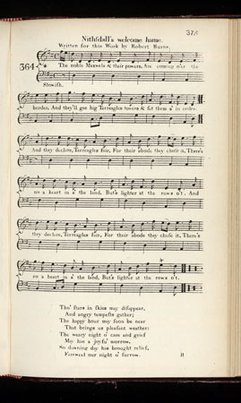

Nithsdale Welcome Home
Bienvenue en Nithsdale
William Maxwell, 5th Earl of Nithsdale (1676 - March 2, 1744)
Tune - Mélodieby Robert Riddell of Glenriddell.
Lyrics by Robert Burns (Scots Musical Museum, 1792, Vol IV page 375 N° 364)
Sequenced by Christian Souchon

|
To the tune:
The tune "Nithsdale's welcome hame" is the composition of Robert Riddell of Glenriddell , one of his best melodies. It is in neither of his printed collections of tunes, but the following unpublished Note in the "Interleaved Museum" is in his handwriting: ' I composed the tune and, Imparting to my friend Mr. Burns the name I meant to give it, he composed for the tune the words here inserted.' Source "Complete Songs of Robert Rurns Online Book" (cf. Links). |
A propos de la mélodie:
La mélodie "Bienvenue en Nithsdale" est l'une des meilleures compositions de Robert Riddell of Glenriddell . On ne la trouve dans aucune de ses deux collections de mélodies, mais la Note qui suit que l'on trouve dans l'"exemplaire interfolié du Musée", et qui n'a jamais publiée jusqu'ici, est de sa main: ' J'ai composé ce morceau et comme je faisais part à mon ami, M. Burns du titre que je voulais lui donner, ce dernier a composé sur cette mélodie les paroles que l'on lira ci-après.' Source "Complete Songs of Robert Rurns Online Book" (cf. Links). |

|
1. The noble Maxwels
And their powers, Are coming o'er the border, And they'll gae to big Terreagles towers And set them a' in order. And they declare, Terreagles fair, For their abode they chuse it, There's no a heart In a' the land, But's lighter at the news o't. 2. Tho' stars in skies May disappear, And angry tempests gather; The happy hour May soon be near That brings us pleasant weather: The weary night O' care and grief May hae a joyfu' morrow; So dawning day Has brought relief, Fareweel our night o' sorrow. |
1. Les nobles Maxwell
Ont recouvré Leurs terres et leurs droits Et vont remettre en état Les grandes tours De Trève-Eglise Voila qu'ils déclarent Ne plus vouloir. Demeurer autre part. Chacun se réjouit Dans ce pays De la bonne nouvelle. 2. Les astres peu- Vent fuir les cieux Le mauvais temps paraître L'instant présent Est si plaisant, Qu'il comble tout notre être. La triste nuit De nos soucis Tout à coup se dissipe Le jour qui point Y porte soin Adieu nuit maléfique! (Trad. Ch.Souchon(c)2006) |
|
William Maxwell, 5th Earl of Nithsdale
(1676 - March 2, 1744), was a noted Catholic, who took part in the Jacobite rising of 1715.
He was captured at Preston, found guilty of treason, and sentenced to death. The night before the day appointed for his execution (February 24, 1716), he effected an escape from the Tower of London by exchanging clothes with his daring and devoted countess, who had been admitted to his room. He fled to Rome, where he lived in happiness with his wife until her death. Winifred Maxwell, Countess of Nithsdale , née Winifred Herbert (c.1680-1749), is, as mentionned above, best known for arranging the daring escape of her husband from the Tower of London in 1716. Her husband was sentenced to death, despite Winifred's personal appeal to King George I. On the night before his execution was due to take place, she persuaded the guards to let her see him, dressed him in women's clothing (including the "Nithsdale Cloak", which is still held by the family) and smuggled him out. The sole surviving child of the Earl (who had lost his lands to the Crown,) Lady Winifred Maxwell (1736-1801), was also a staunch Jacobite whom Burns sometimes visited at her rebuilt home of Terreagles. The song by Burns is written to commemorate the return of Lady Winifred Maxwell to her ancestral home. In 1758, Lady Winifred had married William Haggerston, Constable of Everingham, who had taken on the name and arms of his wife's, the Maxwell clan - hence the reference to Maxwell in the opening line. Sir Walter Scott sent a letter to Lockhart dated July 14, 1828, on Burns's connexion with Jacobitism in which he says: "I see, by the by, that your "Life of Burns" is going to press again, and therefore send you a few letters, which may be of use to you. In one of them (to that singular old curmudgeon, Lady Winnifred Constable) you will see he plays high Jacobite, and on that account it is curious; though I imagine his Jacobitism, like my own, belonged to the fancy rather than the reason..." (Cf à ce sujet: Strathallan's Lament ). |
William Maxwell, 5ème Comte de Nithsdale
(1676 - 2 Mars, 1744), était connu pour son catholicisme. Il prit part au soulèvement Jacobite de 1715.
Il fut fait prisonnier à Preston, déclaré coupable de trahison et condamné à mort. La nuit précédant le jour fixé pour son exécution (24 février 1716), il parvint à s'échapper de la Tour de Londres en échangeant ses vêtements avec ceux de l'audacieuse et dévouée comtesse qui avait pu avoir accès à sa cellule. Il s'enfuit à Rome où il vécut heureux avec son épouse jusqu'à sa mort. Winifred Maxwell, Comtesse de Nithsdale , née Winifred Herbert (c.1680-1749), est donc surtout connue pour avoir mené à bien la rocambolesque évasion de son mari de la Tour de Londres en 1716. Son mari avait été condamné à mort malgré la demande de grâce présentée par Winifred en personne au roi George I. La nuit précédant l'exécution, elle persuada les gardes de la laisser le voir une dernière fois, le revêtit d'un costume féminin (dont le "manteau de Nithsdale" qui fait toujours partie de l'héritage familial) et le fit sortir. Le seul enfant survivant du comte (dont les biens avaient été confisqués au profit de la Couronne), Lady Winifred Maxwell (1736-1801), était aussi une Jacobite convaincue à qui Burns rendait parfois visite à son château restauré de Terreagles. Ce chant fut composé par Burns pour célébrer le retour de Lady Winifred Maxwell dans la demeure de ses ancêtres. En 1758, Lady Winifred avait épousé William Haggerston, Constable de Everingham, qui avait pris le nom et les armoiries du clan de sa femme, le clan Maxwell -d'où la référence aux Maxwell au premier vers. Walter Scott envoya une lettre à Lockhart, datée du 14 juillet 1828, traitant du Jacobitisme de Burns où il écrit: "A propos, il paraît que votre "Vie de Burns" va être prochainement rééditée et je vous envoie quelques lettres qui pourront vous être utiles. Dans l'une d'entre elles (adressée à cette vieille grincheuse de Lady Winnifred Constable), vous verrez qu'il pose au Jacobite convaincu, et c'est ce qui en fait tout l'intérêt, bien que j'imagine que son Jacobitisme, tout comme le mien, relevait de l'imaginaire plus que de la raison..." (Cf. à ce sujet: Strathallan's Lament ). |